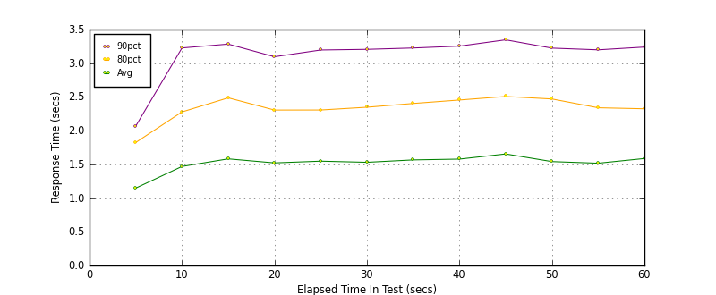
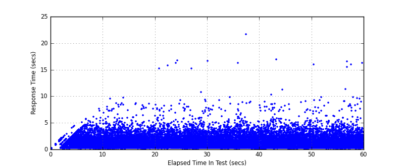
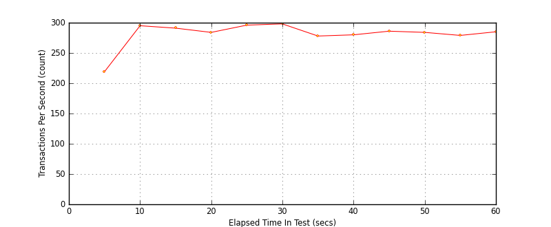

Performance Results Report
Summary
transactions: 17357
errors: 0
run time: 60 secs
rampup: 0 secs
test start: 2017-05-25 14:53:57
test finish: 2017-05-25 14:54:57
time-series interval: 5 secs
workload configuration:
| group name | threads | script name |
|---|
| user_group-10 | 30 | redis_stress.py |
| user_group-11 | 30 | redis_stress.py |
| user_group-12 | 30 | redis_stress.py |
| user_group-13 | 30 | redis_stress.py |
| user_group-14 | 30 | redis_stress.py |
| user_group-15 | 30 | redis_stress.py |
| user_group-2 | 30 | redis_stress.py |
| user_group-3 | 30 | redis_stress.py |
| user_group-1 | 30 | redis_stress.py |
| user_group-6 | 30 | redis_stress.py |
| user_group-7 | 30 | redis_stress.py |
| user_group-4 | 30 | redis_stress.py |
| user_group-5 | 30 | redis_stress.py |
| user_group-8 | 30 | redis_stress.py |
| user_group-9 | 30 | redis_stress.py |
All Transactions
Transaction Response Summary (secs)
| count | min | avg | 80pct | 90pct | 95pct | max | stdev |
|---|
| 17357 | 0.038 | 1.527 | 2.316 | 3.194 | 3.874 | 21.628 | 1.345 |
Interval Details (secs)
| interval | count | rate | min | avg | 80pct | 90pct | 95pct | max | stdev |
|---|
| 1 | 1098 | 219.60 | 0.038 | 1.148 | 1.824 | 2.067 | 2.319 | 4.428 | 0.746 |
| 2 | 1478 | 295.60 | 0.183 | 1.469 | 2.277 | 3.226 | 3.728 | 7.582 | 1.146 |
| 3 | 1457 | 291.40 | 0.182 | 1.582 | 2.487 | 3.283 | 4.093 | 9.703 | 1.379 |
| 4 | 1422 | 284.40 | 0.183 | 1.522 | 2.305 | 3.096 | 3.735 | 8.634 | 1.220 |
| 5 | 1484 | 296.80 | 0.179 | 1.548 | 2.306 | 3.196 | 3.878 | 16.746 | 1.480 |
| 6 | 1493 | 298.60 | 0.183 | 1.531 | 2.347 | 3.205 | 4.060 | 15.210 | 1.378 |
| 7 | 1390 | 278.00 | 0.185 | 1.566 | 2.403 | 3.225 | 3.781 | 16.601 | 1.314 |
| 8 | 1404 | 280.80 | 0.181 | 1.578 | 2.454 | 3.253 | 4.054 | 21.628 | 1.451 |
| 9 | 1434 | 286.80 | 0.179 | 1.655 | 2.507 | 3.347 | 4.268 | 16.884 | 1.487 |
| 10 | 1420 | 284.00 | 0.176 | 1.541 | 2.470 | 3.223 | 3.916 | 9.052 | 1.254 |
| 11 | 1399 | 279.80 | 0.182 | 1.517 | 2.339 | 3.198 | 3.870 | 16.000 | 1.344 |
| 12 | 1428 | 285.60 | 0.181 | 1.587 | 2.324 | 3.239 | 4.080 | 16.561 | 1.586 |
Graphs
Response Time: 5 sec time-series

Response Time: raw data (all points)

Throughput: 5 sec time-series
